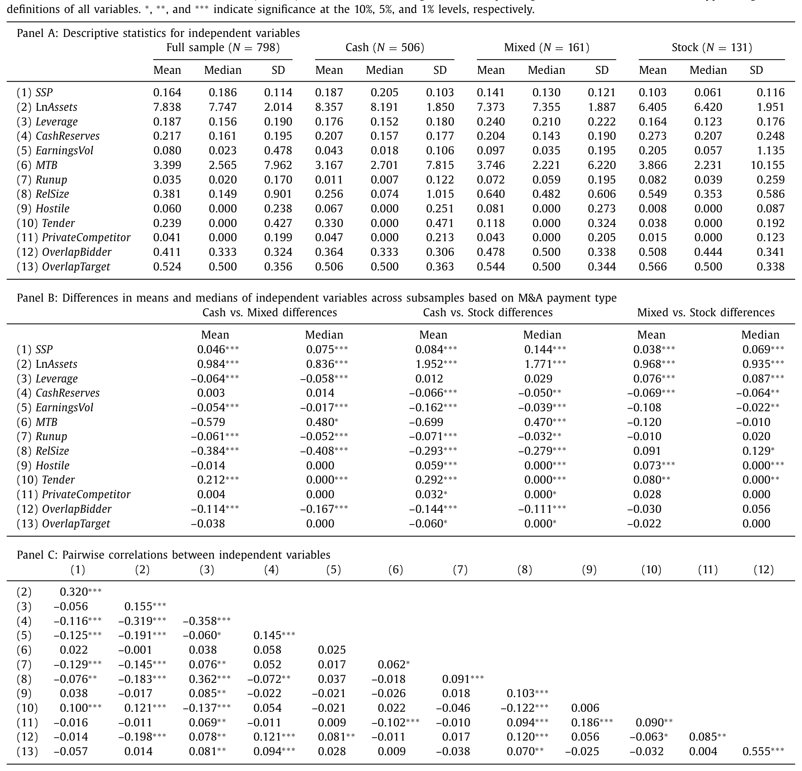
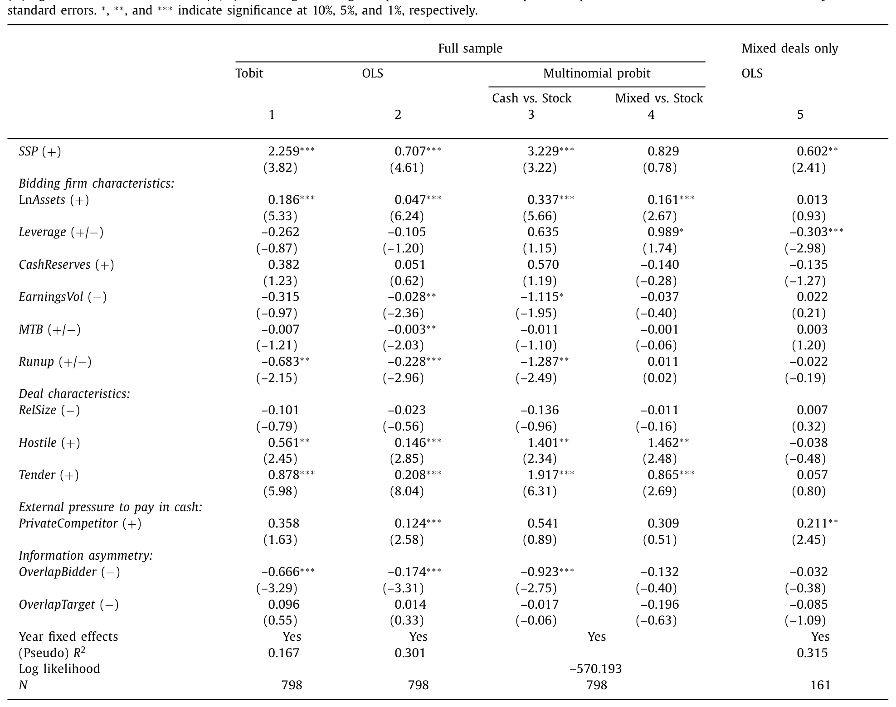
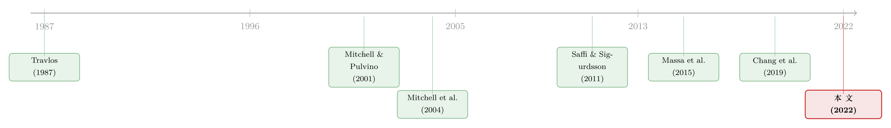

想躲开套利者的「做空」，就用现金买下它
本文读的是 Dutordoir, Strong & Sun (2022, Journal of Financial Economics)：一家公司在并购时选择用现金还是用股票支付，竟然取决于它的股票「好不好被做空」。作者用收购方股票的事前可借出供给衡量「卖空潜力」(short-selling potential, SSP)，发现 SSP 每上升一个标准差，并购对价中的现金占比就提高约 5.13%。背后的机制，是收购方在主动躲开并购套利者 (merger arbitrageur) 的做空。
1 一个老问题里被忽略的角色
并购 (mergers and acquisitions, M&A) 的支付方式——是掏现金，还是发新股——是公司金融里被翻来覆去研究了几十年的老问题。最经典的一条经验事实是：用现金收购，收购方的公告期股价基本无恙甚至微涨；而一旦宣布用股票收购，收购方的股价往往应声下跌。
对此，教科书给的标准答案是「信号」(signaling)：管理者比外人更清楚自家股票值多少钱，愿意用股票去换别人的资产，本身就泄露了「我觉得自己的股票被高估了」这层意思（Travlos, 1987）。于是市场顺势把价格往下打。这个故事很漂亮，几乎主导了整条文献。
但故事里一直藏着一个被忽略的角色。Mitchell, Pulvino & Stafford (2004) 做了一件煞风景的事：他们把股票并购公告日那段负收益拆开，发现其中将近一半根本不是信号，而是价格压力——来自并购套利者的做空。
接着，一个自然的问题就冒出来了：如果有相当一部分跌幅是套利者「砸」出来的，而管理者又不傻、事前就能预见到这件事，那么——他们会不会为了躲开这群人的做空，而改变支付方式本身？
这正是本文的切入点。
2 套利者是怎么「砸」价格的
要理解这篇文章，得先看清并购套利者在干什么。
当一桩并购宣布时，目标公司的股价通常不会一步涨到收购报价那么高——中间留着一道价差，原因是交易还可能告吹、加上货币的时间价值（Weston et al., 2014）。并购套利者就专门去赚这道价差：宣布当天买入目标公司的股票，等交易完成时按报价兑现（Mitchell & Pulvino, 2001；Baker & Savaşoğlu, 2002）。
关键在于换股交易里的对冲动作。在一桩换股收购中，套利者拿到的最终是收购方的股票，于是他要同时做空相应数量的收购方股票，把对收购方股价波动的暴露给对冲掉。问题是——股票的需求曲线并非完全弹性（Shleifer, 1986），这一大笔集中的、与基本面无关的做空，会实实在在地把收购方股价往下压。
而现金收购完全没有这道工序：套利者买了目标公司的股票，到期换回的是现金，对收购方股票毫无暴露，自然也就没有做空的必要。
这一不对称是全文的支点：换股 → 套利者做空收购方 → 价格压力；现金 → 没有这回事。所以「多用现金」天然就是一条躲开套利做空的路径。
那么，收购方为什么要在意这一下子的价格压力？作者给了两个并不互斥的理由。其一，若价格压力中含有永久性成分（关于指数调整、可转债套利等冲击留下永久痕迹的证据，见 Shleifer, 1986；Duca et al., 2012），那这一跌就不只是「过一阵会回来」的噪声。其二，公告期收益常被外界当成评判一桩交易、乃至评判管理层能力的「焦点」（Lehn & Zhao, 2006；Jaffe et al., 2013），新闻稿、Factiva 上的报道在引用收购方股价反应时，从不会替你扣掉套利那一块——于是难看的反应本身就带来声誉代价。
于是核心假设水到渠成：越是容易被套利者做空的收购方，越会在对价里塞进更高比例的现金。
3 怎么衡量「容易被做空」
假设有了，真正关键的一步在于：怎么把「容易被套利者做空」这件事事前量化出来？
作者沿用近年的做法，用收购方股票可供借出的供给来衡量卖空潜力。直觉很朴素：可借出的股票越多，想做空的人搜寻、借券的成本就越低（Duffie et al., 2002），事前被套利做空的潜在压力也就越大。而且，可借出供给有两个讨喜的性质——它是管理者事前可观测的，又直接对应卖空约束的理论（Massa et al., 2015）。
具体地，作者用 Markit 的证券借贷数据，先算出一个净可借出供给：
$$ \text{LendingSupply} = (\text{ex\,ante\ lending\ supply}) - (\text{value\ on\ loan}) $$
也就是事前可借出供给的美元价值，减去已经被借走（已在贷）的部分——后者意在剔除那些已经被知情做空者占用的份额。再把它除以收购方市值，取并购公告前第 4 至第 2 个月这一三个月窗口的均值，得到主变量 SSP。
这个变量在样本里跨度很大：约 24.2% 的收购方 SSP 低于 5%，而最高可达 43.4%。
光看分组均值就已经很有暗示性了。如表 3，现金交易收购方的 SSP 平均为 0.187，混合支付为 0.141，纯股票支付仅 0.103，且两两之间的差异在常规水平上显著——支付里现金越多的收购方，恰恰是越「好做空」的那一批。

Table 3
在跑回归之前，作者还先做了一次「自检」，确认自家样本不是异类：用一因子市场模型估出的异常收益，现金交易公告期 CAR(−1,1) 平均为 +0.86%（p < 0.001），股票交易为 −2.59%（p < 0.05）；再用 Mitchell et al. (2004) 的两阶段方法拆分，发现套利做空大约解释了股票交易负反应的 42%，对中位数收购方相当于 5534 万美元的市值蒸发——这与 Mitchell et al. 的 46%、Liu & Wu (2014) 的 62% 基本同量级。地基是稳的。
4 基准结果与那条最漂亮的安慰剂
接下来是主菜。作者在一个标准的支付选择模型里，控制了文献公认的一大堆决定因素——信息不对称、资本结构、估值、相对交易规模、敌意收购、要约收购等等（Martin, 1996；Faccio & Masulis, 2005；Karampatsas et al., 2014；Ben-David et al., 2015），然后看 SSP 的系数。
结果与假设完全一致：SSP 对支付中现金占比有统计与经济上都显著的正向影响。SSP 每提高一个标准差，现金占比上升约 5.13%。 对于一个动辄上亿美元的交易，这不是小数目。

Table 4
然后作者把这个结果往各个方向拷打了一遍：用回归残差构造的 ResidualSSP（剔除规模、相对交易规模、流动性后的剩余供给）替换主变量，结论不变；换用文献里其它的卖空潜力代理（D'Avolio, 2002；Cohen et al., 2007；Saffi & Sigurdsson, 2011；Massa et al., 2015）乃至把它们合成一个指数，结论不变；用基于 ETF 持股的工具变量处理 SSP 的内生性，结论不变；甚至盯着同一批反复并购的收购方，看 SSP 的变化如何带动现金占比的变化，结论依旧。
但真正让人信服「这就是套利做空在起作用」的，是一记安慰剂 (placebo)。
并购套利者买不到私人公司的股票——没有可买的目标股，就没有后续对收购方的对冲性做空。于是作者把样本换成收购私人目标（public-to-private）的交易：如果 SSP 的作用真来自套利做空，那在这里它就该失灵。结果正如预期，SSP 对私人目标交易的现金占比影响不显著。
这一步是全文识别的「点睛」：同一个变量、同一套机制，在「该起作用」的样本里显著，在「机制被掐断」的样本里消失。这比任何一个稳健性检验都更能排除「SSP 只是某种遗漏变量代理」的担忧。
更进一步，作者还担心可借出供给可能通过另外两条渠道影响支付——它与收购方被高估相关（Ben-David et al., 2015），也与公司治理相关（Chang et al., 2019）。把这两类额外控制变量加进去，SSP 的正向效应依然挺立。
5 把机制再往里推一层
如果驱动结果的真是「躲开套利价格压力」，那么哪里套利威胁更凶，SSP 的作用就该更强。作者顺着这条逻辑设了三组辅助假设，全部得到印证：
- 在更可能完成的交易里，套利者更敢下注，SSP 的影响更强；
- 在并购套利基金资金净流入更高的时期（套利火力更足），SSP 的影响更强；
- 在需求更缺乏弹性的收购方（同样的做空、价格被压得更狠）里，SSP 的影响更强。
最后，作者直接去量「预期价格压力」本身。他们基于 Chacko, Jurek & Stafford (2008) 的价格冲击模型，把收购方的可借出供给、套利需求、流动性与波动率组合成一组预期价格压力(expected price pressure, EPP) 代理。受限于日内交易数据，样本从 798 笔缩到 496 笔，但结论稳定：EPP 对现金占比同样有正向影响，且经济量级与 SSP 的结果相当。
作者自己很诚实地提醒：度量套利带来的预期价格压力本就困难，因为股票交易的公告期反应里还混着信号效应（Mitchell et al., 2004）。所以这一组「价格压力」结果应带着这层 caveat 来读，它是佐证，而非独立的铁证。
6 文献脉络
把这篇论文放回它生长的土壤里，能看得更清楚。
它其实站在两条河流的交汇处。
一条河是 M&A 支付选择。从 Hansen (1987)、Fishman (1989)、Eckbo, Giammarino & Heinkel (1990) 的「交换媒介」理论，到 Travlos (1987) 的信号假说，再到 Shleifer & Vishny (2003)、Rhodes-Kropf & Viswanathan (2004) 的「估值驱动并购」模型，以及用做空头寸反推高估的 Ben-David et al. (2015)——这条河讲的一直是公司自身或交易本身的特征如何决定支付方式。
另一条河是 并购套利与卖空。Mitchell & Pulvino (2001)、Baker & Savaşoğlu (2002)、Geczy, Musto & Reed (2002) 研究套利的风险与收益；Mitchell et al. (2004) 和 Liu & Wu (2014) 则揭示套利做空怎样压低收购方股价。与此并行的，是一支日渐壮大的「卖空—公司决策」文献：可转债设计（de Jong et al., 2011）、盈余管理（Massa et al., 2015）、高管激励合约（De Angelis et al., 2017）、增发方式选择（Dutordoir et al., 2019），以及与本文最近的 Chang et al. (2019)——后者发现卖空威胁会抑制管理者去做毁损价值的并购。

本文的位置，恰是把这两条河接上：它不再问「公司特征如何决定支付」，而是问「套利者被预期到的交易策略如何决定支付」。也正因如此，它顺带为并购股东财富效应的研究提了个醒——想把公告期反应估准，就得把支付选择里这条套利渠道纳入设定（Hansen, 1987；Faccio & Masulis, 2005）。
关于卖空信息本身的定价含义，可参见《把卖空看成一次「投票」》与《期权里藏着的，不是先知，而是一张借券账单》；而关于并购中另一种「被预期的对手方」如何反过来塑造交易，则可对照《替你估值的人，正在替你「挑」对手》。
7 评论与延伸（Q&A + 研究方向）
(a) 几个可能的疑问
Q：SSP 用的是「可借出供给」而不是「实际做空量」，会不会量错了对象？
这恰恰是作者的刻意选择。实际做空量是套利者事后的行为，而支付决策发生在公告之前，管理者当时能看到的是供给侧的潜力，而非别人将要做空多少。用事前可借出供给，既符合决策时序，也对应卖空约束的理论（Massa et al., 2015）。代价是它只是「潜力」，需要后面那些机制检验来补上「潜力确实转化成压力」这一环。
Q：这和信号假说是互斥的吗？现金多，会不会只是因为这些公司没被高估？
不互斥，而是并存。作者并不否认信号/高估渠道，而是在控制了高估代理（Ben-David et al., 2015）之后，SSP 仍显著——说明套利渠道是信号之外的增量。最有力的区分还是那记安慰剂：高估故事无法解释「为什么 SSP 在私人目标交易里就失灵了」，但套利故事可以。
Q：因果还是相关？SSP 会不会本身就被某种遗漏变量驱动？
作者用了基于 ETF 持股的工具变量来处理内生性，结论一致；又用反复并购者的「SSP 变化 → 现金占比变化」做了类固定效应的检验。这些都增强了因果解读，但工具变量的排他性（ETF 持股只通过供给影响支付）仍需读者自行掂量。
Q：5.13% 这个量级算大吗？
这是「一个标准差」对应的效应，落在现金占比这个 0–100% 的变量上。对一桩大型交易，5 个百分点意味着可观的现金/股票结构调整，且与基于价格冲击模型独立算出的 EPP 效应量级吻合——两条不同路径指向相近的数，本身就增加了可信度。
Q：为什么不用纯股票 vs 纯现金的二元选择，而用现金占比这个连续变量？
因为现实中大量交易是混合支付（样本里占
20.18%）。用连续的现金占比，既能捕捉「边际上多塞一点现金」的调整，也比二元变量保留了更多信息——管理者躲避套利压力的方式往往不是非黑即白，而是「掺多少现金」。
Q：样本只到 2017、且只含美国公开—公开交易，外推性如何？
样本 798 笔、523 家收购方、2002–2017，规模与 post-2000 的同类研究相当（Boone et al., 2014；de Bodt et al., 2018）。但它依赖 Markit 的借贷数据与活跃的美国并购套利生态，搬到借贷市场更浅、套利资本更少的市场，机制是否同样有力，是开放问题。
(b) 几个可能的研究问题与提案
1. 把这套逻辑搬到可转债与公司债发行上
【经济故事】可转债套利者同样要做空发行人股票，de Jong et al. (2011)、Dutordoir et al. (2019) 已在增发与可转债维度看到「卖空潜力」的影子。一个自然的问题是：发行人会不会据 SSP 调整债券条款（转股溢价、赎回保护、是否附带回购股票）来稀释套利做空压力？ 【可行性】高。Mergent FISD + Markit 借贷数据 + 发行条款，识别可借鉴本文的事前 SSP 设计与私募/公募的安慰剂对比。
2. 外资持有人与可借出供给的交互
【经济故事】外资机构（尤其被动型）常是证券借贷市场的主要供给方。若外资持股抬高了可借出供给，那么外资进入本身就可能通过 SSP 渠道改变本地公司的并购支付与融资行为。 【可行性】中。需把 FactSet/13F 的外资持股与 Markit 借贷供给对接，识别上可用指数纳入等外生冲击驱动被动外资份额，再看支付选择——内生性是主要难点。
3. 套利价格压力在公司债市场是否有对应物
【经济故事】公司债大宗交易、指数纳入与赎回同样会引发可预期的、与基本面无关的价格压力。发行人/承销商是否会据「预期价格压力」调整发行节奏与一级市场定价？ 【可行性】中。TRACE 提供成交，Chacko et al. (2008) 式的价格冲击模型可移植到债券流动性度量上；难点在于债券借贷与做空数据远不如股票完整。
4. 卖空潜力对「交易是否完成」的反馈
【经济故事】本文把完成概率当作调节变量，但因果也可能反向：高 SSP 迫使收购方多用现金，而现金交易完成率更高——于是 SSP 通过支付方式间接影响成败。 【可行性】高。本文样本已含已完成与撤回交易，可用中介分析（SSP → 现金占比 → 完成）配合工具变量来拆解这条链。
8 我的判断与参考文献
这是一篇「机制讲得干净、识别做得克制」的论文。它最大的贡献不在于又找到一个支付选择的决定因素，而在于把被预期到的套利者行为正式写进了公司决策的方程——公司不只是在回应基本面，也在回应「明天谁会来交易我的股票」。那记 public-to-private 安慰剂，是我读下来最服气的一笔：它用一个机制被天然掐断的样本，几乎一对一地排除了「SSP 是别的东西的代理」这条退路。
担忧主要有两点。其一，主变量是「潜力」而非「已实现的压力」，从供给到价格压力之间那一环，靠的是一组辅助检验在间接支撑，而非直接观测；EPP 那一节作者自己也承认信号与压力难以彻底分离。其二，ETF 工具变量的排他性、以及反复并购者样本可能的选择性，留给因果解读一些余地。
后续我最想看到的，是把这套「躲避可预期套利压力」的逻辑推到融资条款的内生设计上去——不只是现金 vs 股票这种粗粒度选择，而是赎回条款、锁定期、对冲安排这些细节，看公司到底动用了多少工具来对付那群还没出场的套利者。
参考文献
- Baker, M., Savaşoğlu, S. (2002). Limited arbitrage in mergers and acquisitions. Journal of Financial Economics 64, 91–115.
- Ben-David, I., Drake, M., Roulstone, D. (2015). Acquirer valuation and acquisition decisions: identifying mispricing using short interest. Journal of Financial and Quantitative Analysis 50, 1–32.
- Chacko, G., Jurek, J., Stafford, E. (2008). The price of immediacy. Journal of Finance 63, 1253–1290.
- Chang, E., Lin, T., Ma, X. (2019). Does short-selling threat discipline managers in mergers and acquisitions decisions? Journal of Accounting and Economics 68, 1–18.
- D'Avolio, G. (2002). The market for borrowing stock. Journal of Financial Economics 66, 271–306.
- de Bodt, E., Cousin, J., Roll, R. (2018). Full-stock-payment marginalization in merger and acquisition transactions. Management Science 64, 760–783.
- De Jong, A., Dutordoir, M., Verwijmeren, P. (2011). Why do convertible issuers simultaneously repurchase stock? An arbitrage-based explanation. Journal of Financial Economics 100, 113–129.
- Duffie, D., Garleanu, N., Pedersen, L. (2002). Securities lending, shorting, and pricing. Journal of Financial Economics 66, 307–339.
- Dutordoir, M., Strong, N., Sun, P. (2019). Shelf versus traditional seasoned equity offerings: the impact of potential short selling. Journal of Financial and Quantitative Analysis 54, 1285–1311.
- Eckbo, B., Giammarino, R., Heinkel, R. (1990). Asymmetric information and the medium of exchange in takeovers: theory and tests. Review of Financial Studies 3, 651–675.
- Faccio, M., Masulis, R. (2005). The choice of payment method in European mergers and acquisitions. Journal of Finance 60, 1345–1388.
- Fishman, M. (1989). Preemptive bidding and the role of the medium of exchange in acquisitions. Journal of Finance 44, 41–57.
- Geczy, C., Musto, D., Reed, A. (2002). Stocks are special too: an analysis of the equity lending market. Journal of Financial Economics 66, 241–269.
- Hansen, R. (1987). A theory for the choice of exchange medium in mergers and acquisitions. Journal of Business 60, 75–95.
- Karampatsas, N., Petmezas, D., Travlos, N. (2014). Credit ratings and the choice of payment method in mergers and acquisitions. Journal of Corporate Finance 25, 474–493.
- Martin, K. (1996). The method of payment in corporate acquisitions, investment opportunities, and management ownership. Journal of Finance 51, 1227–1246.
- Massa, M., et al. (2015). (short-selling potential / earnings management). Journal of Finance 71, 1251–1294.
- Mitchell, M., Pulvino, T. (2001). Characteristics of risk and return in risk arbitrage. Journal of Finance 56, 2135–2175.
- Mitchell, M., Pulvino, T., Stafford, E. (2004). Price pressure around mergers. Journal of Finance 59, 31–63.
- Rhodes-Kropf, M., Viswanathan, S. (2004). Market valuation and merger waves. Journal of Finance 59, 2685–2718.
- Saffi, P., Sigurdsson, K. (2011). Price efficiency and short selling. Review of Financial Studies 24, 821–852.
- Shleifer, A. (1986). Do demand curves for stocks slope down? Journal of Finance 41, 579–590.
- Shleifer, A., Vishny, R. (2003). Stock market driven acquisitions. Journal of Financial Economics 70, 295–311.
- Travlos, N. (1987). Corporate takeover bids, methods of payment, and bidding firms' stock returns. Journal of Finance 42, 943–963.